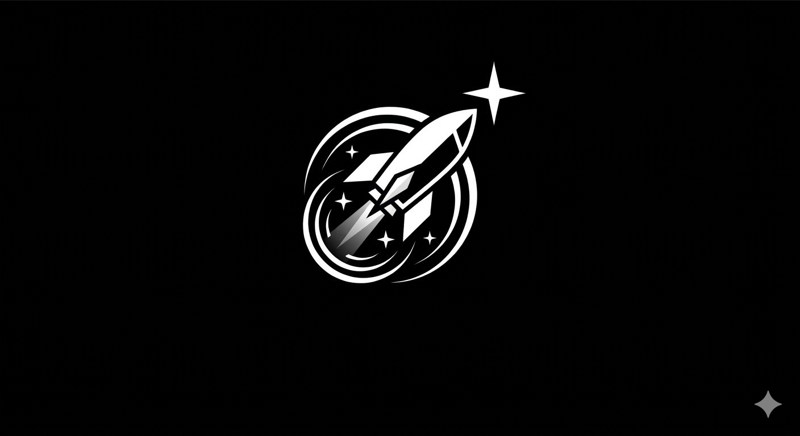
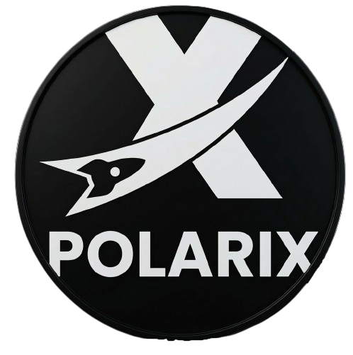
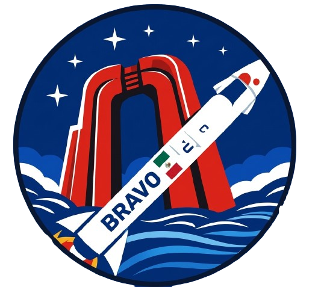
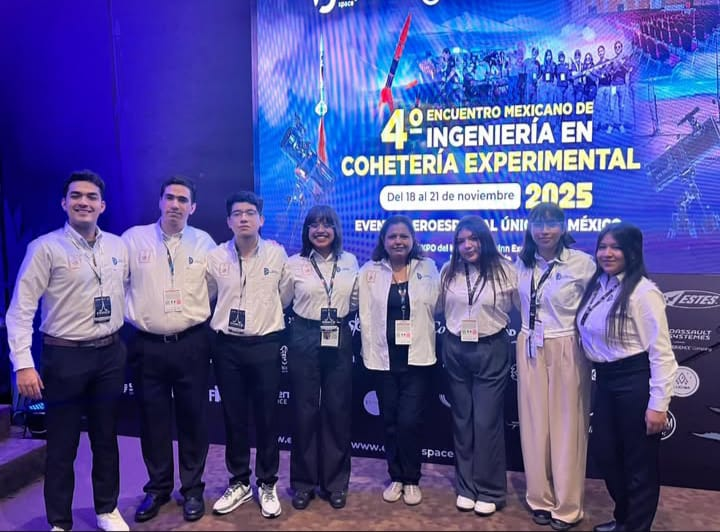
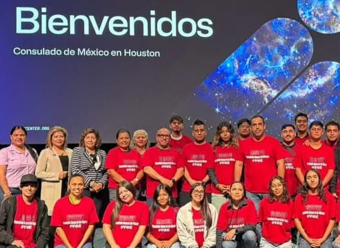
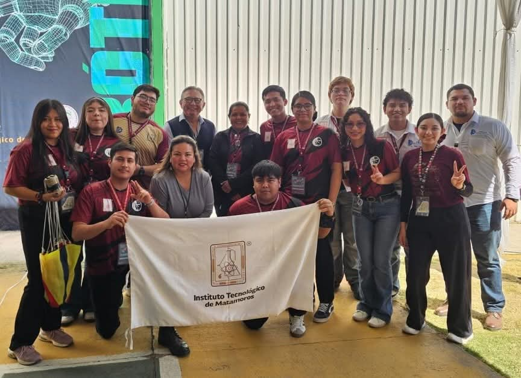

Formando a la próxima generación de líderes en tecnologías espaciales desde el Instituto Tecnológico de Matamoros.
Únete al POLARIS
POLARIS (Programa de Oportunidades para el Liderazgo y el Aprendizaje en la Revolución de la Industria eSpacial), es un programa universitario enfocado en la formación de estudiantes en tecnologías espaciales del Instituto Tecnológico de Matamoros.

Evalua el impacto ambiental de la playa Bagdag tras el lanzamiento del proyecto espacial SpaceX
Ver proyecto
Impulsa la coheteria experimental con agua y PET, inspirados por Starship en Boca Chica
Ver proyecto
Desarrollo de carga útil con sistemas de telemetría y sensado. Representando al TecNM / IT Matamoros en la vanguardia aeroespacial desde Zapopan, Jalisco.
Ver más
Participación en la Feria de Innovación y Desarrollo en Houston. Fortaleciendo la colaboración tecnológica y el talento del IT Matamoros.
Ver más
BRAVO II, cohete hidro propulsado, siendo el único proyecto de cohetería con agua en todo el evento, donde tambien se presento el módulo de telemetría Bravo-TM.
Ver másForma parte de una comunidad única de visionarios y exploradores.
Regístrate y únete a nuestros equipos de trabajo
Únete a Polaris